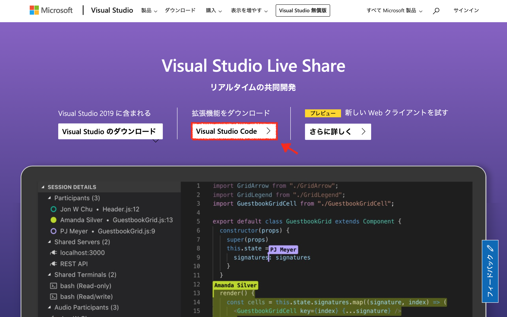
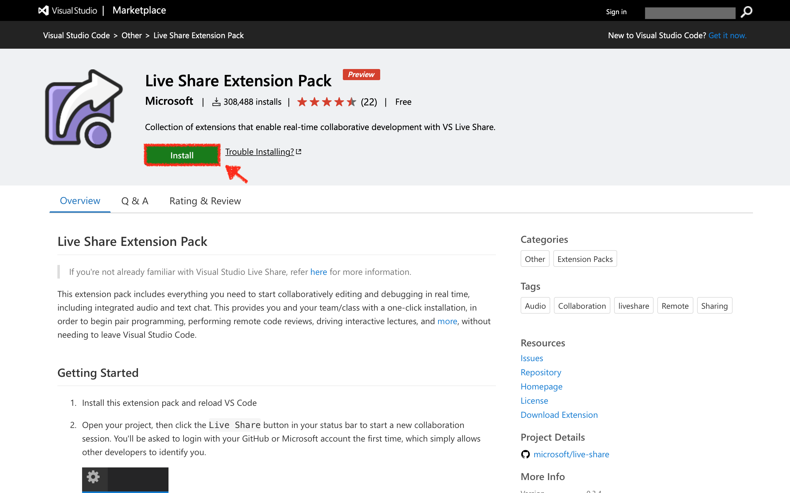
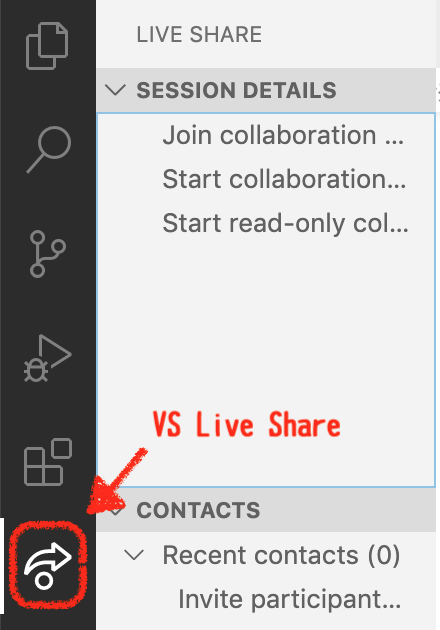
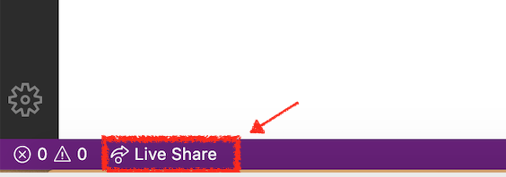
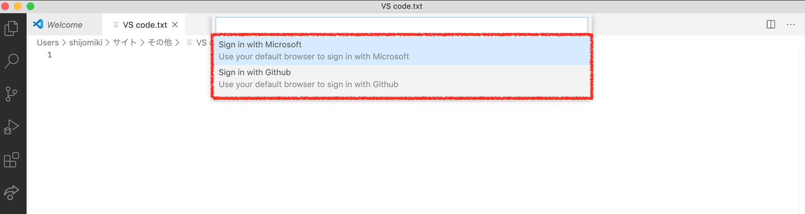
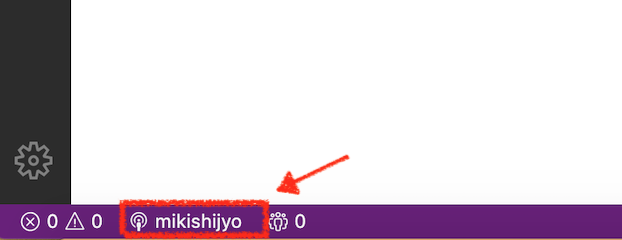
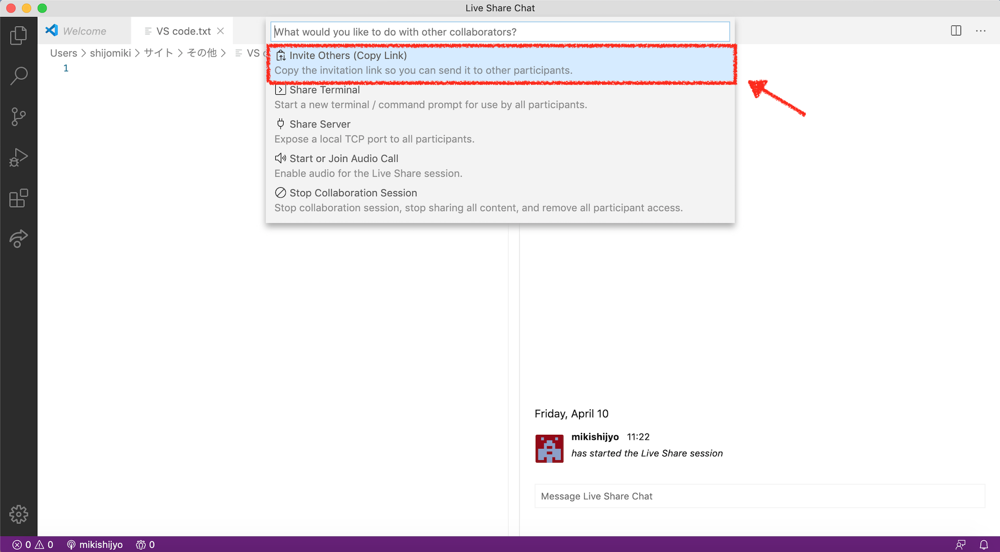
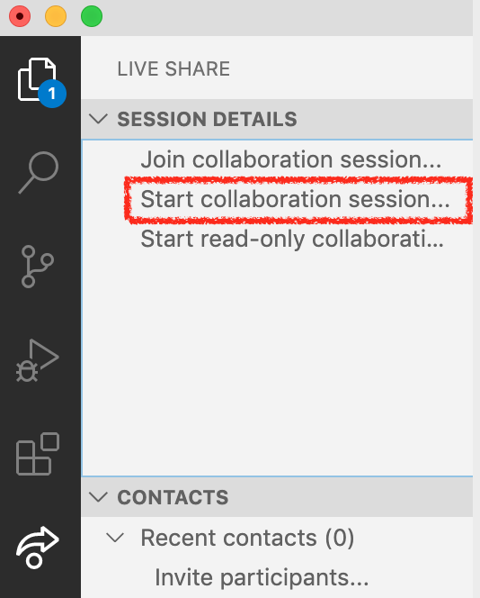
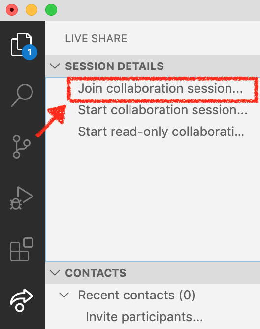
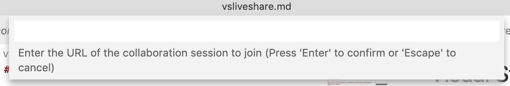

https://visualstudio.microsoft.com/ja/services/live-share/
①拡張機能をダウンロード

②「install」をクリック

③インストールしたら、VScodeを再起動しましょう。
きちんとインストールできていると、サイドバーにLiveShareタブが追加されます。 
①画面左下の「Live Share」をクリック

②MicrosoftアカウントかGitHubアカウントでログイン

ログインできていると画面左下にユーザー名が表示されます。

自分の環境をシェアするには２つのやり方があります。
①画面左下のユーザー名をクリック
②「Invite others (Copy Link)」をクリック
クリップボードに招待リンクがコピーされます。 
①LiveShareタブ「Start collaboration session」をクリックすると、クリップボードに招待リンクがコピーされます。

①「Join collaboration session」をクリック

②画面上部にURLを入力する欄が出てくるので、ホスト側から受け取ったURLを入力

※ホスト側から受け取ったリンクをブラウザで開いて参加することも可能です。